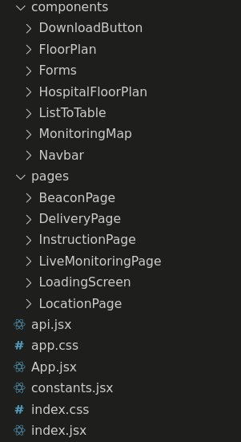
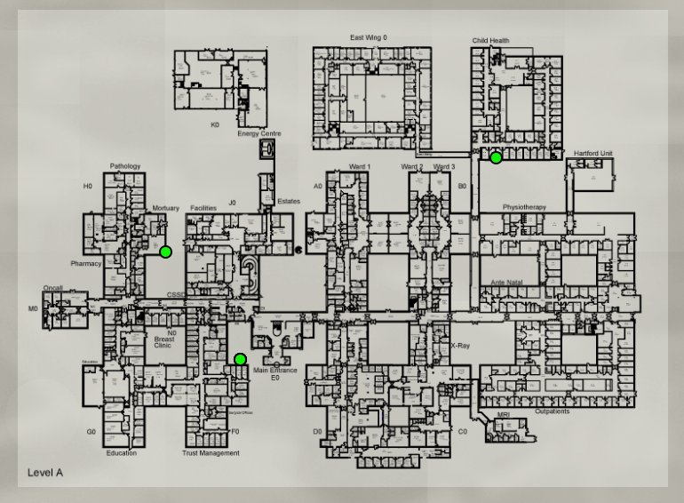
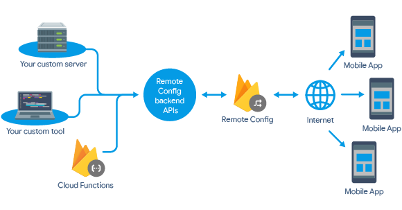

Requirements
The process of defining and refining project requirements.
Requirements
When it comes to implementing a frontend for a software application, there are several important requirements that must be taken into consideration. These requirements ensure that the frontend is not only visually appealing and user-friendly but also functional, efficient. Implementing a frontend that meets these requirements is crucial for providing a high-quality user experience and maximizing the usability and accessibility of the application. In this article, we will discuss some of the key requirements for implementing a frontend and how we addressed them in our application.
Must have:
- Display the live locations of all the porters
- Display the delivery requests and their status
- Ability to request a delivery
- Ability to add and remove porters from the system
- Ability to add and remove beacons from the system
Should have:
- User should be able to get real-time feedback about porters' responses
- Ability to add and remove transport locations from the system
Could have:
- Ability to assign deliveries according to priority
- See the live locations of all crash calls/integrate into Crash 2222 calls.
- Ability to track individual high priority assets
Main Tools & Dependencies
Initial Approach
In our initial approach to implementing the frontend for our application, we evaluated several popular frameworks to determine which one would best meet our needs. After careful consideration, we decided on React due to its popularity, performance, and availability of a large and active developer community. Additionally, some team members had previous experience with React, which made it a natural choice for our application. By choosing React, we were able to create reusable components and efficient updates, resulting in a user-friendly and responsive application that met the requirements of our users.
Code Structure
Our project's code structure is designed to promote modularity and reusability, with separate files for each of the pages and reusable components such as forms and tables. This approach allowed us to create a clean and organized codebase, making it easier to maintain and update our application over time. Each page of our application has its own file, containing all the necessary components, styling, and logic for that page. This approach allowed us to keep our code organized and easy to understand, making it easier for team members to work on different parts of the application independently. In addition, we created reusable components such as forms and tables, which we used across multiple pages. By creating these components, we were able to reduce duplicate code and promote consistency across our application.
Live Monitoring
In our application, we utilized websockets to receive real-time updates about the location and status of porters. Websockets are a bi-directional communication protocol that allows for efficient and seamless data transfer between the server and client. This means that our frontend was able to receive instant updates about porter positions and any status updates.
By using websockets, we were able to ensure that our application was always up-to-date with the latest information, providing users with real-time tracking of porter positions. This was particularly important for our application, which required fast and seamless updates to ensure that users could track porter locations accurately and efficiently.
To implement the websockets in our React frontend, we used the react-stomp library. This library provided a convenient and efficient way to set up and manage websockets within our application, allowing us to easily receive real-time updates about the location and status of porters.
Floor Plan

Initial Attempt
In our application, we implemented the floor plan initially using the devextreme-react library, which allowed us to draw a basic plan and add interactive elements to it:

However, we encountered limitations when trying to display markers on the plan, which required more flexibility
than the library could provide. Furthermore, it became very clear that in hospital settings, a floor plan
would be much more complex in terms of room layout, as well as having multiple buildings and floors. Our concerns
were proven to be true when our client handed us over a two-floor plan of Wansbeck Hospital, the hospital where
our project would be initially deployed.
With the future expandability of our web app in mind, it would be wrong to base our entire solution on just one
hospital floor plan, breaking it down into individual room components and floors and storing everything, which
would also take a considerable amount of time to fetch from our backend and load.
As a result, we decided to display each floor of the hospital as an image, and overlay circular markers on top
of it to act as porter, beacon or delivery locations.
To implement this, we coded the floor plan using Javascript and CSS, whilst also exporting it into a React
component to be used in our Live Monitoring, Beacons and Deliveries page.
Overlaying Markers on Top of the Floor Plan
As mentioned previously, with future expandability in mind, we wanted to create an interactive map that would scale perfectly no matter the original resolution of the image, how zoomed into the image a user was, or how scaled an image is by the page that uses it. Hence, we stored the marker's positions as x and y percentage offsets from the top left of the image rather than storing them as x and y pixel values. This allowed us to add a 'zoom in/out' functionality for hospital staff to observe a more detailed delivery tracking view. Additionally, it gave us the advantage that markers would always appear correctly positioned on the floor plan, even if it was loaded in multiple sizes across our web app. This approach also ensured that the interactive map would scale correctly regardless of the image's resolution, and enabled us to avoid having to store and fetch individual room components and floors.

The 'calculateMarkerPosition' function above is what is responsible to convert markers' percentage offsets (markerPosition.x and markerPosition.y) to dynamic pixel values depending on the current resolutions of the image (imageSize.width and imageSize.height), the zoomLevel a hospital staff member is currently using and the percentage an image is restricted by in the floor plan component( This is usually 100% to indicate no restriction but sometimes images with extremely large resolutions provided need to be scaled down before they are exported).
Adding Delivery Locations and Beacons to the Floor Plan
To make it simple for hospital staff to indicate where they have placed physical beacons on a floorplan or point out where deliveries should be picked up from and delivered to, we added functionality to our component, so that if it is called from the 'Beacons' or 'Deliveries' page, a beacon marker appears when the map is clicked, and users can save this beacon and its corresponding MAC-address:
Final Product
Beacons and Locations
In our application, we needed to provide the ability to add beacons and locations by specifying their position on the floor plan, as well as a list component to view all beacons and locations in the system. Functionality of beacons and locations were very similar, so we were able to reuse many of the components we had already developed.
To add a beacon or location, users could simply click on the position on the floor plan where they wanted to place the beacon or location, and fill out a form to provide additional information such as the location name or beacon MAC adress. This information was then sent to the backend where it was saved in the database, and the newly added item would appear on the floor plan and in the list component.
Porters and Delivery Requests
Unlike beacons and locations, our porters and delivery requests did not need to be positioned on the floor plan. This made the implementation of these features more straightforward, as we did not need to incorporate any specific floor plan functionality. To add a new porter or delivery, users simply filled out a form providing relevant information such as their name, phone number or delivery locations. This information was then sent to the backend server where it was saved to the database, and displayed in the appropriate list component.
As with the beacon and location feature, we were able to reuse some of the same components we had developed for other parts of our application, such as the form and table components. This enabled us to maintain a consistent user interface and code structure throughout our project.
Firebase Hosting
After we completed the development of our application, we needed to choose a platform to host our frontend. We ultimately decided on Firebase Hosting, which allowed us to deploy our frontend code easily and efficiently. We configured our hosting settings in the firebase.json file, which allowed us to specify custom rules and configurations for our deployment. One of the most beneficial features of Firebase Hosting was its ability to automatically deploy our code in the pipeline on every code commit, which helped to ensure that our app was always up-to-date and running smoothly. By choosing Firebase Hosting, we were able to streamline our deployment process and make it much more efficient.
Final implementation
Due to time constraints, we were only able to implement all the must-have and should-have features within the given timeline. While we would have loved to implement all the could-have features, such ability to assign deliveries according to priority, integrating Crash calls, and ability to track individual high-priority assets, we had to prioritize our efforts to ensure the core functionality of the application was working properly. Despite not being able to complete all of the could-have features, we were proud of what we were able to accomplish within the project timeline. By focusing on the most important aspects of the application, we were able to create a reliable and user-friendly tool that hospital staff could use to streamline their daily operations.